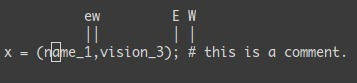

Apprenez Vim Progressivement
tlpl: Vous désirez apprendre vim (le meilleur editeur de texte connu à ce jour) le plus rapidement possible. Voici mes conseils pour vous aider. Commencez à apprendre le minimum vital, puis apprenez doucement de nouvelles commandes.
Vim ou l’éditeur qui vallait 3 milliards :
Meilleur, plus fort, plus rapide.
Apprenez vim et ce sera votre dernier éditeur. Aucun éditeur que je connaisse ne le surpasse. Sa prise en mais est difficile, mais payante.
Je vous conseille de l’apprendre en 4 étapes :
- La survie
- Se sentir à son aise
- Se sentir meilleur, plus fort et plus rapide
- Tirer parti des super-pouvoirs de vim
À la fin de ces leçons vous serez transformé.
Avant de commencer, un message pour vous prévenir. Apprendre vim sera difficile au début. Ça prendra du temps. Vous devrez vous entraîner. Apprendre vim ressemble beaucoup à apprendre un instrument de musique. N’espérez pas être plus efficace avec vim qu’avec un autre éditeur avant au moins trois jours. En fait ça sera certainement plus 2 semaines que 3 jours.
1er Niveau – Survivre
- Installez vim
- Lancez vim
- NE TOUCHEZ A RIEN! Lisez
Dans un éditeur normal, il suffit de taper sur une touche du clavier et la lettre s’affiche à l’écran. Pas ici. Vim est en mode Normal. Commençons par placer vim en mode Insert. Tapez sur la touche i.
Voilà, c’est magique. Vous pouvez tapez comme dans un éditeur standard. Pour repasser en mode Normal tapez sur la touche Echap.
Maintenant que vous savez passer du mode Normal au mode Insert. Voici les commandes de survie (toutes en mode Normal) :
i→ Passer en mode insértion. TaperEchappour repasser en mode Normal.x→ Supprimer le caractère sous le curseur:wq→ Sauvegarder et quitter (:wsauvegarde,:q<enter>quitter)dd→ Supprimer (et copier) la ligne courantep→ CollerRécommandées :
hjkl(optionnel) → se déplacer (<-↓↑→). Souvenez vousjressemble à une flèche vers le bas.:help <commande>→ Affiche l’aide pour<commande>. Vous pouvez aussi écrire:helppour atterir sur l’aide générale.
Seulement 5 commandes. Voilà, c’est tout pour un début. Essayez d’éditer vos fichiers comme ça pendant une petite journée. Lorsque ces commandes vous sembleront naturelles, vous pourrez passer à l’étape d’après.
Mais avant un petit mot sur le mode Normal. Dans un éditeur normal pour copier il faut utiliser une combinaison de touches (Ctrl-c). En fait, lorsque vous appuyez sur la touche Ctrl, c’est un peu comme si toutes les touches du clavier avaient un autre usage. Dans vim, lorsque vous êtes en mode Normal, c’est comme si vous mainteniez Ctrl enfoncé.
Quelques mots concernant les notations :
- Au lieu d’écrire
Ctrl-λ, j’écrirai<C-λ>. - Les commandes qui commencent par
:ont un retour à la ligne implicite à la fin. Par exemple lorsque que j’écris,:qcelà signifi qu’il faut taper:, suivi deq, suivi de<Return>.
2ème Niveau – Se sentir à son aise
Vous connaissez les commandes de survie. Passons à des commandes pour être un peu plus à notre aise. Je vous suggère :
Les variantes de l’insertion
a→ Commei, mais après la position du curseur.o→ Commei, mais à la ligne suivante.O→ Commeomais ajoute la ligne avant.cw→ Remplacer la fin du mot.
Déplacements basiques
0→ Aller à la première colonne.^→ Aller au premier caractère de la ligne.$→ Aller à la fin de la ligne.g_→ Aller au dernier caractère de la ligne./pattern→ Rechercherpatterndans le fichier.
Copier/Coller
P→ Coller avant. Souvenez vous,pcolle après la position du curseur.yy→ Copier la ligne courante. C’est plus simple et équivalent àddP
Annuler/Refaire
u→ Annuler (undo)<C-r>→ Refaire
Ouvrir/Sauvegarder/Quitter/Changer de fichier (buffer)
:e <path/to/file>→ Ouvrir.:w→ Sauvegarder.:saveas <path/to/file>→ Sauvegarder sous …:x,ZZou:wq→ Sauvegarder et quitter (:xsauvegarde seulement si nécessaire).:q!→ Quitter sans sauvegarder. De même:qa!quitte même si d’autres fichiers (buffers) ont des modifications non sauvegardées.:bn(resp.:bp) → Affiche le fichier suivant (resp. précédent).
Prenez le temps de bien intégrer ces commandes. Une fois fait, vous devriez être capable de faire tout ce qu’on peut attendre d’un éditeur de texte classique.
3ième Niveau – Meilleur. Plus fort. Plus rapide.
Bravo ! Si vous êtes arrivé jusqu’ici nous allons pouvoir commencer à apprendre les choses vraiment intéressantes. Pour cette section, je vais seulement parler de commandes disponible dans vi et vim. Vim est la contraction de “vi improved”, ou en Français, “vi amélioré”.
Meilleur
Voyons comment nous pouvons éviter les répétitions avec vi :
.→ Le caractère point répètera la dernière commande. Très utile.- N
<commande>→ répètera la commande N fois.
Quelques exemples, ouvrez un fichier (non vide) avec vim et tapez :
2dd→ Supprimera 2 lignes3p→ copiera 3 fois d’affiler le texte copié100idesu [ESC]→ écrira “desu desu desu desu desu desu desu desu desu desu desu desu desu desu desu desu desu desu desu desu desu desu desu desu desu desu desu desu desu desu desu desu desu desu desu desu desu desu desu desu desu desu desu desu desu desu desu desu desu desu desu desu desu desu desu desu desu desu desu desu desu desu desu desu desu desu desu desu desu desu desu desu desu desu desu desu desu desu desu desu desu desu desu desu desu desu desu desu desu desu desu desu desu desu desu desu desu desu desu desu”.→ Juste après la dernière commande réécrira les 100 “desu”.3.→ Écrira 3 “desu” et non pas 300. Bien vu n’est-ce pas ?
Plus fort
Savoir se déplacer efficacement avec vim est très important. Ne sautez pas cette section.
- N
G→ Aller à la ligne N gg→ raccourci pour1G, retourner au début du fichierG→ Aller à la dernière ligne.Déplacement autour des mots:
w→ aller au début du mot suivante→ aller à la fin du mot courant
Par défaut les mots sont seulement composés de lettres (et du caractère souligné
_). Appelons un MOT un ensemble de lettre séparé par des caractères blancs (espaces, tabulation). Si vous voulez considérer des MOTS alors il suffit d’utiliser les majuscules.W→ aller au début du MOT suivantE→ aller à la fin du MOT courant

Passons aux commandes de déplacement les plus efficaces :
%: Aller à la parenthèse, accolade, crochet correspondante.*(resp.#) : Aller à la prochaine (resp. précédente) occurrence du mot sous le curseur
Croyez moi, ces trois dernières commandes valent de l’or. Retenez les et vous gagnerez beaucoup de temps.
Plus rapide
Vous vous souvenez que j’ai dit que les déplacements étaient très importants en vi. Voilà pourquoi. Une façon de travailler avec vim est de se dire que l’on fait des “phrases”. Le verbe étant la commande et les compléments définissent la zone d’action. De façon générale :
<position de depart><commande><position d'arrivee>
Par exemple : 0y$ signifie :
0→ Aller au début de la ligne,y→ copie à partir d’ici,$→ jusqu’à la fin de cette ligne.
On peut donc faire des choses comme ye, copie à partir de la position courante du curseur jusqu’à là fin du mot. Mais aussi: y2/toto copie jusqu’à la seconde prochaine occurrence de “toto”.
Ce qui est vrai pour y (yank → copier), est aussi vrai pour d (delete → supprimer), v (sélection visuelle), gU (uppercase → majuscule),gu (lowercase → minuscule), etc…
4ième Niveau – Les super pouvoirs de Vim
Jusqu’ici vous avez appris les commandes les plus courantes. Mais voici les killer features de vim. Celles que je n’ai retrouvé que dans vim (ou presque).
Déplacement sur la ligne : 0 ^ $ g_ f F t T , ;
0→ aller à la colonne 0,^→ aller au premier caractère de la ligne$→ aller à la dernière colonne de la ligneg_→ aller au dernier caractère de la lignefa→ vous amène à la prochaine occurrence de a sur la ligne courante.,(resp.;) recherche l’occurrence suivante (resp. précédente).t,→ vous amène juste avant le,.3fa→ recherche la 3ième occurrence dea.FetT→ commefettmais en arrière.
Un truc pratique : dt" → supprime tout jusqu’au prochain ".
Selection de zone <action>a<object> ou <action>i<object>
Ces commandes sont utilisable seulement en mode visuel ou après un “opérateur”. Mais elles sont très puissantes. Leur forme générale est:
<action>a<objet> et <action>i<objet>
Où action peut être par exemple d (delete), y (yank), v (select in visual mode), etc… Un objet peut être: w un mot, W un MOT (mot étendu), s une phrase, p un paragraphe. Mais aussi des caractère plus naturels comme ", ', ), }, ].
Supposons que le curseur soit positionné sur le premier o dans (map (+) ("foo")).
vi"→ sélectionnerafoo.va"→ sélectionnera"foo".vi)→ sélectionnera"foo".va)→ sélectionnera("foo").v2i)→ sélectionneramap (+) ("foo")v2a)→ sélectionnera(map (+) ("foo"))
Sélection de blocs rectangulaires : <C-V>.
Les blocs rectangulaires sont très commodes pour commenter plusieurs lignes de codes. Typiquement: ^<C-V><C-d>I-- [ESC]
^→ aller au premier caractère de la ligne<C-V>→ Commencer la sélection du bloc<C-d>→ se déplacer vers le bas (pourrait êtrejjjou%etc…)I-- [ESC]→ écrit--pour commenter le reste de la ligne.

Remarquez que sous windows, vous devez utiliser <C-q> plutôt que <C-v> si votre “presse papier” n’est pas vide.
Complétion : <C-n> et <C-p>.
En mode Insert, commencez à écrire le début d’un mot déjà présent dans l’un des buffers (fichers) ouvert et tapes <C-p>. Magique.

Macros : qa faire quelque chose q, @a, @@
qa enregistre tout ce que vous faite et enregistre le tout dans le registre a. Ensuite @a va rejouer la macro enregistrée dans le registre a comme si c’est vous qui tapiez au clavier. @@ est un raccourci pour rejouer la dernière macro exécutée.
Exemple : Sur une ligne contenant seulement un 1 tapez :
qaYp<C-a>q→
qa→ début de l’enregistrement.Yp→ copier cette ligne.<C-a>→ incrémente le nombre.q→ arrête d’enregistrer.@a→ écrit un 2 sous le 1.- Écrivez
100@@. Cela va créer une liste de nombre croissants jusqu’à 103.

Sélection visuelle : v,V,<C-v>
On a déjà vu un exemple avec <C-V>. Mais il y a aussi, v et V. Et une fois la sélection visuelle faite vous pouvez par exemple:
J→ joindre toutes les lignes pour en faire une seule<(resp.>) → indenter à gauche (resp. à droite).=→ auto indenter
Ajouter quelque chose à la fin de toutes les lignes sélectionnées visuellement :
<C-v>- aller jusqu’à la ligne désirée (
jjjou<C-d>ou/patternou%etc…) $aller à la finA, écrire le texte,Echap.

Splits : :split et vsplit.
Je vous conseille de faire un :help split. Celà permet de manipuler plusieurs buffer sur la même fenêtre. Voici les commandes principales :
:split→ crée un split (:vsplitcrée un split vertical)<C-w><dir>→ où dir est l’un dehjklou ←↓↑→ permet de changer de split.<C-w>_(resp.<C-w>|) → Maximise la taille du split (resp. split vertical)<C-w>+(resp.<C-w>-) → Agrandi (resp. diminue) le split

Conclusion
Voilà, je vous ai donné 90% des commandes que j’utilise tous les jours. N’essayez pas de toutes les apprendre en une journée. Il faut le temps de s’habituer à chaque nouvelle commande. Je vous conseille de ne pas apprendre plus d’une ou deux commandes par jour.
Apprendre Vim est plus une question d’entraînement que de mémorisation. Heureusement vim est founi avec un très bon tutoriel et une excellente documentation. Lancez vimtutor jusqu’à ce que vous vous sentiez à l’aise avec les commandes basiques. De plus, vous devriez aussi lire en détail la page suivate : :help usr_02.txt.
Ensuite vous découvrirez !, les folds, les registres, les plugins et tout un tas d’autres choses. Apprenez vim comme vous apprendriez le piano et vous devriez très bien vous en sortir.